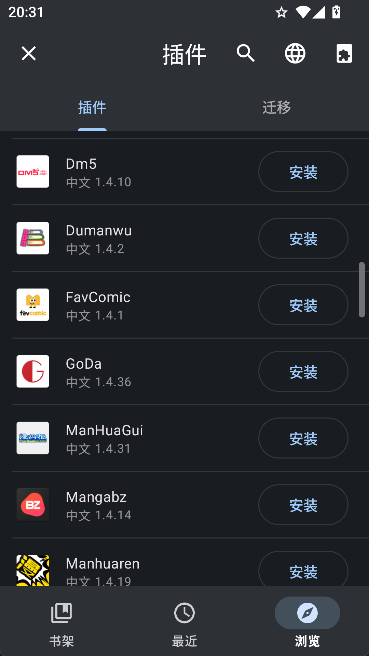

追15本漫画却零管理成本——我用 Tachiyomi 搭了条自动更新的追更流水线
每周固定追近二十本漫画，以前要开五个浏览器标签手动刷更新、记错进度丢章节。现在一台手机装个Tachiyomi，扩展自动更、备份自动存云盘，半年没碰过浏览器里的漫画书签夹。
我每周要追十五到二十本连载漫画，分布在三四个不同的源站。以前这条流程是这样的：
浏览器里存一个叫「漫画追更」的书签夹，分门别类塞着 MangaDex、某国内源、某汉化组的网址。每天早上坐地铁点开，先扫 MangaDex 的更新列表，再切国内源看一眼，记一下哪几页更了，关掉标签。周末再抽半小时翻之前记的那个便签本，把没看完的章节补上。
这条链路卡死我三个地方。第一，源站改版或者挂了，书签夹里的链接直接失效，又要去搜索引擎翻新地址。第二，换手机或者清缓存，阅读进度和分类习惯全部归零。第三，最烦的——忘记哪本更了，隔三天想起来翻，章节已经攒了十几页，得从头找上次看到哪。
后来我把 Tachiyomi官网 提供的这套生态嵌了进来。它不是另一个漫画阅读器，而是把整条追更流程里所有需要手动操心的环节接管了。下面说具体怎么接，每一环都讲清楚上下游怎么配合。
核心：Tachiyomi 是整条流水线的枢纽
我选的是 Mihon 分支——原版停更后最正统的继任者，Material 3 界面干净，Android 13 的分区存储跑起来没任何兼容问题。老手机上装的是 TachiyomiSY，安装包从官方下载就能拿到，兼容性好到 Android 6.0 还能跑，专门拿来当备用阅读器。
它干的事很单纯：安装扩展仓库、挑几个好用的漫画源、把要追的书加进书架。就这三步。但扩展生态是整条流水线能不能转起来的关键——没有扩展，Tachiyomi 就是个空壳阅读器。

扩展仓库默认自带几个主流的，我再加一个第三方仓库（Keiyoushi），基本覆盖了能找到的所有漫画源。打开自动更新之后，源站改版导致的解析失败问题，扩展作者更新后后台自动推送新版本，我基本感知不到断链。
扩展这一环怎么处理不断链
扩展更新了还是打不开章节，是这条流水线里最容易卡住的环节。我总结下来四步排查：
- 先看是不是源站真挂了——同一个源其他漫画也加载不出来，那就是源站被屏蔽或者服务器宕机，换个源继续追。
- 如果只有这本打不开，大概率是源站加了反爬（Cloudflare 盾或验证码），扩展作者可能还在处理，等一两天再试。
- 有些源需要登录才能看，在扩展里点登录按钮输一下账号——Tachiyomi 里登录态是跟着扩展走的，不用每个源重复登。
- 实在不行就版本锁定——具体回滚步骤Tachiyomi文档里有完整说明：去 Keiyoushi 仓库的 Releases 页面找旧版本 APK 手动装，关掉自动更新，等作者修复再开。
我每个月抽十分钟做一次扩展清理——把加载不出来的、半年没用过的扩展卸载掉。书架里塞满标记「源不可用」的条目，是 Tachiyomi 用户最常见的混乱来源，清理一次清爽一次。
上下游衔接：备份是第二道保险
Tachiyomi 自带的备份导出是 .proto.gz 格式，所有分支互通。我把它嵌进了一条更完整的备份链：
Tachiyomi 内部备份 → 定期导出到手机本地 → 自动同步到夸克网盘。
具体操作：在 Mihon 里打开「更多 → 备份和还原」，每两周手动点一次「创建备份」。Android 10+ 用分区存储，备份文件落在系统指定的目录里。我用夸克网盘的自动备份功能，把这个目录标记为「自动上传」，换手机或者重装应用的时候，从网盘拉下来还原就行——书架、分类、阅读进度全部回来，零成本迁移。
这条链帮我躲过过两次灾难。一次是去年换手机，旧手机的 Android 版本太低装不了 Mihon（需要 8.0+），我把备份直接导入 TachiyomiSY，所有数据原样回来，只是界面变圆了。另一次是手机清缓存不小心清到了应用数据，从网盘拉备份不到三分钟恢复如初。
旧流程里完全没有的一件事：自动提醒
Tachiyomi 的书架会显示每本漫画最后更新的时间。我在设置里打开了「每 X 小时检查更新」（设成 12 小时），有新章节就推送一条通知。现在我再也不用主动刷浏览器书签夹了——通知弹出来点开看就行，没弹就说明没更。
这一步替代了我以前早上地铁里手动刷五个标签页的习惯，每天省五分钟。
整套流程长什么样
把上面说的串起来，我现在的追更工作流是这样的：
- 枢纽：Mihon 做主阅读器，TachiyomiSY 做老手机备胎
- 扩展：Keiyoushi 仓库 + 自动更新 + 每月清理
- 备份：每两周手动导出 → 夸克网盘自动同步
- 提醒：应用内每 12 小时检查更新 + 系统通知
- 边界：iOS 用户无解（Apple 签名机制和 Tachiyomi 架构根本冲突），源站集体挂的时候只能等
换个角度量化一下：以前这条流程每天花五到十分钟，现在基本零投入——除了每月十分钟的扩展清理和每两分钟的备份导出，剩下的全是被动接收通知。当然这套流程不是所有人都划算——如果你只追两三本漫画，直接用浏览器标签页加个 RSS 阅读器可能更轻。但追十本以上的，Tachiyomi 做核心枢纽这条链，值得搭。
最后说一句迁移成本。原版停更之后我从 v0.15.3 迁到 Mihon，实际只做了三步：导出旧备份 → 装 Mihon → 还原备份。所有数据原样回来了，书架顺序、分类、进度、甚至扩展的登录态，一个没丢。.proto.gz 这个备份格式是原版留下的最有价值的遗产，社区所有分支都完整兼容。
关于扩展仓库的选择、各分支的差异对比，完整的版本选型指南和安装教程在文档里写得更细，有需要可以去翻。所有活跃分支的 APK 都在各自的 GitHub Releases 页面发布。
社区现在汇总了原版停更后的各分支生态，选哪个版本、扩展仓库地址、常见问题都能在那里找到答案。
上面提到的所有工具版本对比、扩展更新策略、备份方法这套资料，我同步在 GitHub、Gitee、GitCode 三个仓库里了——GitHub 主仓库维护着最完整的文档，国内网络访问不方便的时候 Gitee 和 GitCode 各有一份镜像可以直接拉。